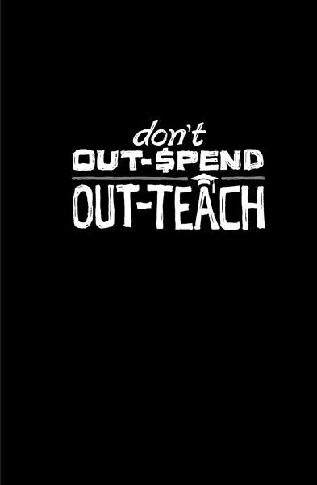

{% include JB/setup %}
{% raw %}
<div>

<h2 id="filepos174629" class="calibre19"><span class="calibre2"><a class="calibre13"></a><strong class="calibre14">Build an audience</strong></span></h2><div class="calibre4"></div>
<p class="calibre7">All companies have customers. Lucky companies have fans. But the most fortunate companies have <em class="italic1">audiences</em>. An audience can be your secret weapon.</p>
<p class="calibre17">A lot of businesses still spend big bucks to reach people. Every time they want to say something, they dip into their budgets, pull out a huge wad of cash, and place some ads. But this approach is both expensive and unreliable. As they say, you waste half of your ad budget--you just don't know which half.</p>
<p class="calibre17">Today's smartest companies know better. Instead of going out to reach people, you want people to come to you. An audience returns often--on its own--to see what you have to say. This is the most receptive group of customers and potential customers you'll ever have.</p>
<p class="calibre17">Over the past ten years, we've built an audience of more than a hundred thousand daily readers for our Signal vs. Noise blog. Every day they come back to see what we have to say. We may talk about design or business or software or psychology or usability or our industry at large. Whatever it is, these people are interested enough to come back to hear more. And if they like what we have to say, they'll probably also like what we have to sell.</p>
<p class="calibre17">How much would it cost us to reach those hundred <a class="calibre16"></a>thousand people every day the old-fashioned way? Hundreds of thousands? Millions? And how would we have done it? Running ads? Buying radio spots? Sending direct mail?</p>
<p class="calibre17">When you build an audience, you don't have to buy people's attention--they give it to you. This is a huge advantage.</p>
<p class="calibre17">So build an audience. Speak, write, blog, tweet, make videos--whatever. Share information that's valuable and you'll slowly but surely build a loyal audience. Then when you need to get the word out, the right people will already be listening.</p>
<p class="calibre3"><a class="calibre16"></a></p><div class="calibre4"></div>
</div>

{% endraw %}

